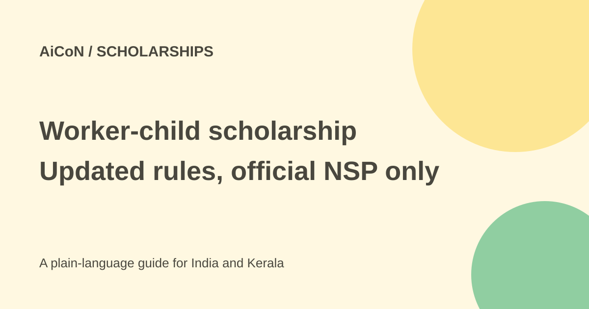

Scholarship for children of beedi, cine and mine workers: amounts and how to apply
The Ministry of Labour and Employment pays education assistance for children of beedi, cine and some mine workers. It ranges from Rs 1,000 to Rs 25,000 a year. The post-matric deadline for 2026-27 is 31 October 2026.

What is this scheme?
The Office of the Welfare Commissioner under the Ministry of Labour and Employment runs financial assistance for the education of wards (children) of Beedi, Cine and certain mine workers: iron ore, manganese ore and chrome ore mines (IOMC), limestone and dolomite mines (LSDM), and mica. A PIB release of 10 June 2026 invited applications for 2026-27.
How much does it pay?
From the PIB release, the amount depends on the class or course:
| Classes I to IV | Rs 1,000 a year |
|---|---|
| Classes V to VIII | Rs 1,500 a year |
| Classes IX to X | Rs 2,000 a year |
| Classes XI to XII | Rs 3,000 a year |
| ITI, Polytechnic, Degree (including B.Sc. Agriculture) | Rs 6,000 a year |
| Professional courses | Higher, up to Rs 25,000 a year. See the Labour Ministry document for the exact amounts. |
The money is sent to the student's bank account by Direct Benefit Transfer (DBT).
The earlier AiCoN post covered only the post-matric part. This scheme also has a pre-matric part, but its deadline was 31 August 2026 and has passed.
Important dates for 2026-27
| Pre-matric last date | 31 August 2026 (passed) |
|---|---|
| Post-matric last date for students | 31 October 2026 |
| Defective application and institute verification | till 15 November 2026 |
| DNO/SNO/MNO verification | till 30 November 2026 |
How to apply, step by step
- Open scholarships.gov.in.
- Complete the One Time Registration (OTR) and keep your OTR ID.
- Log in and choose "Financial Assistance for Education to the Wards of Beedi/Cine/IOMC/LSDM Workers - Post Matric".
- Fill in the form and upload the documents asked, such as proof of the parent's work and bank details.
- Submit before 31 October 2026.
- Ask your institute to verify the application.
- Track the status on NSP.
For questions, the PIB release lists the Welfare Commissioner's Office, Nagpur: 0712-2510200 or 0712-2510474, email wcngp-labour[at]nic[dot]in.
Cost, eligibility and limits
| Cost to apply | Free. |
|---|---|
| Who | Children of beedi, cine, IOMC, LSDM and mica workers, including contract workers in those mines. |
| Where | All of India. It is the same NSP for Kerala students. |
| Limits | Your parent's work must be proven under the scheme rules. Read the guidelines on NSP for the proof needed. |
Stay safe
- Apply only on scholarships.gov.in. It is free.
- No agent can speed up a government scholarship.
Frequently asked questions
What is the last date?
31 October 2026 for post-matric, and it was 31 August 2026 for pre-matric.
Do cine workers qualify?
Yes. The scheme covers children of beedi, cine, IOMC, LSDM and mica workers.
How is the money paid?
By DBT to the student's bank account.
Is there an application fee?
No.
Who do I call?
The Welfare Commissioner's Office, Nagpur, 0712-2510200 or 0712-2510474.
Sources: National Scholarship Portal, NSP All Scholarships (dates), PIB release, 10 June 2026, Labour Ministry scheme document. Checked 6 October 2026.